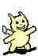
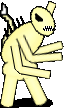

Hephaestus Tutorial: DESTROY ALL POCKET MONSTERS!Copyright © 2002 by Mark Hughes <kamikaze@kuoi.asui.uidaho.edu> |
| LEGAL NOTICE 1: Permission is granted to use the source code, images, and sounds developed in this article for Hephaestus adventures ONLY. |
| LEGAL NOTICE 2: These "pocket monsters" are completely unrelated to any product put out by any large multinational corporation which might want to send teams of cannibal lawyers out to devour me alive for even thinking bad thoughts about their much-beloved products. And even if they WERE related, it'd be "fair use", because it's parody. |
| LEGAL NOTICE 3: No pocket monsters were harmed in the making of this adventure, but only because the toy stores weren't open at 1am, and the neighbor kid screamed for his parents and the cops when I pounded on his window and demanded his pocket monsters. He wet his bed and will need years of therapy, but his pocket monsters were tragically unharmed. |
In this article, I'll show you how to build a complete Hephaestus adventure, from beginning to end. I use a process of incremental development - I write just enough stuff to make it work, prove that it works, and then go back and develop more. Some people like to do a lot of up-front design, but that's not much fun, and it's easy to waste a lot of time with no results that way.
If you haven't done so already, unzip Pocket.zip in your Hephaestus directory, and refresh this page. You can't see the images in this tutorial until you do.
First, the game concept. In this case, the concept is destroying pocket monsters. Say it with me: "ugh!" They're the equivalent of crack cocaine for 6-year-olds, except more saccharine and pointless. Naturally, anyone over 6 wants to kill 'em. So we have the player good and motivated right up front.
Now a title... "Pocket Monsters Must Die"? No, wait - what was that great old movie about Godzilla, King Ghidorah, Mothra, Rodan, and a bunch of third-rate assistant monsters attacking the Earth? DESTROY ALL MONSTERS! (1968)... That's perfect! "Destroy All Pocket Monsters!", and the boss monster can be King Kichapu.
Okay, now the game world. Obviously, it must be set in the present - giant monster movies are great precisely because they trash the world you know and love; any social message is completely overshadowed by Godzilla squishing people as he stomps down the street, chomping on a monorail car. However, I don't want to draw a map of the Earth or even just Japan, at least right now. But I have a random continent generator (it'll be included in Five Rings, so you can see it then)... I can just run that a few times until I get something I like. It has to all be connected, and yet some peninsulas must be isolated enough to serve as newbie and boss monster areas.
~~~~~~~~~~~~~~~~~~~~~~~~~~~~~~~~~~~~~~~~~~~~~~~~~~ 00 ~~~~~~..~~~~~~~~~~~~~~~~~~~~~~~~~~~~~~~~~~~~~~~~~~ 01 ~~~~~~~.9~~~~~~~~~~~~~~~~~~~~~~~~~~~~~~~~~~~~~~~~~ 02 ~~~..~~...~~~~~~~~~~~~~~~~~~~~~~...~~~~~~~~~~~~~~~ 03 ~~..ff.^...~~~~~~~~~~~~~~~~~~~~~~....~~~~~~~~~~~~~ 04 ~~~ffff.ff.~~~~~.~~~.~~~~~~~~~~~.f^.~~~~~~~~~~~~~~ 05 ~~~~~.~~~ff~~~~~fffff~~~~~~~~~~~~fff...~~~~~~~~~~~ 06 ~~~~~~...f~..ff~.ff..~~~~~~~~~~~.^..f.8..~~~~~~~~~ 07 ~~~~~~..f.....fff.f..~~~~~~~~~~~........~~~~~~~~~~ 08 ~~~~~~..f...f~..fff.~~~~~~~~~~~~....f.~.~~~~~~~~~~ 09 ~~~~~~~......~~........~~~~~~~~~.^^.f.~~~~~~~~~~~~ 10 ~~~~~~~.~~~.~~~..f.....~.~~~~~...^^.~~~~~~~~~~~~~~ 11 ~~~~~~~~~~~~~~..^ff..^..~~~~~~~....~~~~~~~~~~~~~~~ 12 ~~~~~~~~~~~~~~.^^ffff...f~~.~~~...~~..~~~~~~~~~~~~ 13 ~~~~~~~~~~~~~~~^^f..f...^~~..~~~......~~~~~~~~~~~~ 14 ~~~~~~~~~~~~~~~.^^^^^^^7.~...~..~......~~~~~~~~~~~ 15 ~~~~~~~~~~~~~~~.....f.f....f.......^^.~~~~~~~~~~~~ 16 ~~~~~~~~..~~~~~f....f.f......^...f..~.~~~~~~~~~~~~ 17 ~~~~~~~~...~~~.f....f^f.f........ff.~~~~~~~~~~~~~~ 18 ~~~~~~~~~.~~~~~~....f...ff...f.....f~~~~~~~~~~~~~~ 19 ~~~~~~~~~..~~~~~~...f.f.f.^^^.f.^^^.~~~~~~~~~~~~~~ 20 ~~~~~~~~...~~~~~....ff..ff.f.........~~.~~~~~~~~~~ 21 ~~~~~~~~.^..~~....f.f...f.f...^^....~~.^~~~~~~~~~~ 22 ~~~~~~~~~...........ffff.f.f..^^^.....~6~~~~~~~~~~ 23 ~~~~~~~~~f.^^^^^^.....ffffffff.^^.......~~~~~~~~~~ 24 ~~~~~~~~..f..^^.^^^^fff.ff..f...^^^^..~.~~~~~~~~~~ 25 ~~~~~~~~..f.......^^............^^^^^~~~~~~~~~~~~~ 26 ~~~~~~~...f~~~.fff..............^^^^..ff~~~~~~~~~~ 27 ~~~~~~~...~~~~.f................^^.^...f~~~~~~~~~~ 28 ~~~~~~~.5...~~..........^^^.....^^^..ff...~~~~~~~~ 29 ~~~~~~.......~......f..f..f.....^^......fff~~~~~~~ 30 ~~~~~~~.~..~~..........f..ffff.^^^......ff~~~~~~~~ 31 ~~~~~~~~~~~~..fff......f..ff.ff.....ffff.....~~~~~ 32 ~~~~....~~~~~..ffff......ff..f.....ff..^^^^..~.~~~ 33 ~~~~..3.~~~~~....ff^.....ff......fffff..^......~~~ 34 ~~~.~..~~~~~.....f...1111.........f.ff...ffff..~~~ 35 ~~.....~~~~~.....f..111111......fff.f....ff.ff~~~~ 36 ~~~....~~~~~~....f.~11~111........fff..^^.......~~ 37 ~~.fff..~~~f.....~~~~~~~1=......ffff....^^^^^ff.~~ 38 ~~~f.....~f.....~~~~~~~~.=.......f..ff...^^^4.f.~~ 39 ~~~f......fff2..~~~~~~.^^=........f^.....^f.....~~ 40 ~~~.~......fff..~~~~~~.^.=~.f......~.....^~.~..f~~ 41 ~~..~~...fff.f^~~~~~~~~~~=~f~~~~~..~~.....~~~~~~~~ 42 ~~.~~~.~^^f.f....~~~0~~~==~~~~~~~~~~..~~...~~~~~~~ 43 ~~~~~~~~~...f....~~~=====~~~~~~~~~~~~~~~....~~~~~~ 44 ~~~~~~~.....fff~~~...~f.~~~~~~~~~~~~~~~~..~.~~~~~~ 45 ~~~~~~~.~~~.ff~~~~..~~~~~~~~~~~~~~~~~~~~~~~f~~~~~~ 46 ~~~~~~~..~~~ff~~~~~f~~~~~~~~~~~~~~~~~~~~~~~f~~~~~~ 47 ~~~~~~~~~~~~~~~~~~~~~~~~~~~~~~~~~~~~~~~~~~~~~~~~~~ 48 ~~~~~~~~~~~~~~~~~~~~~~~~~~~~~~~~~~~~~~~~~~~~~~~~~~ 49 00000000001111111111222222222233333333334444444444 01234567890123456789012345678901234567890123456789 ~ = water - impassable (images/ground/water) . = grass (images/ground/grass) f = forest - filled with monsters! (images/ground/forest) ^ = mountain - impassable (images/ground/mountain) = = highway (images/floor/floor_cobble) 0 = starting village 1 = ruined city 2 = undecided 3 = undecided 4 = undecided 5 = undecided 6 = undecided 7 = undecided 8 = undecided 9 = boss monster
If you don't have a continent generator, or don't like random maps, you can always draw yours by hand - it's not hard. Look at an atlas, and start sketching the outlines of areas. Pretty soon you'll have the hang of making all those fjords and inlets just like Slartibartfast. Draw them on plain paper first, then lay some graph paper over the paper and grid off the coastline. Plop down some forests and mountains (mountain ranges either follow the coastline, or they're volcanic, with a few mountains clustered together), and you're good to go.
See the 0-9 on the map? I just picked 10 spots that were pretty isolated, added some more forests and mountains to make 'em completely isolated, and put the numbers in the most inconvenient places possible. All I know at this point is that 0 is the starting village, 1 is the city that gets ruined as you approach so you know just how nasty these pocket monsters are, and 9 is the boss monster - the fiendish King Kichapu (who destroys City Uno!).
Now I need to know who the player character is. The traditional CRPG character is some sad wet 14-year-old dweeb of a farmboy who gets caught up in a world-shattering plan by, yadda yadda yadda, despite not even being old enough to shave. I'm sick to death of that, aren't you? My character is a bad-tempered, black-clad, ponytailed, 31-year-old programmer, crazed by alcohol, caffeine, and drugs so new they haven't been made illegal yet, driven over the edge by these damned squealing pocket monsters. Um. Not that I ever see anyone like that in the mirror. But I'll call him Mark, anyway. So let's give Mark some starting stats: Body 15, Speed 15, Mind 20, Presence 15. That works for me. Yeah, well, you didn't write this RPG engine and tutorial, now did you? My rule is, you can give yourself whatever stats you like in your own tutorial.
So now I need a sprite, because Mark doesn't look anything like
the default hero boy. I'll start with the standard (ugly) assassin sprite:
and modify it a bit with Gimp... A bit
of blurring, some gradients for the knife, fix that ugly knee, a replacement
face, chrome gargoyles so I don't have to draw eyes, flip it to get 2 facings...
 Pocket/mark
Pocket/mark
Damn, that looks sharp, and just like me (okay, not as thick around the
middle - but again, it's my tutorial. You can trim unwanted pounds in your
tutorial, too). Okay, it's a bit weird that I boogie up and down all the time,
but nobody argues with a scary-looking thug in black with a knife when he wants
to boogie.
Now I can start on the script. Creating 'Pocket.min', I put in:
def(newgame())
set_globals()
build_world()
build_player()
;
def(build_player())
st_name("player", "Mark")
# Set the stats
stats_lock(1)
th_statboth("player", ST_Body, 15)
th_statboth("player", ST_Speed, 15)
th_statboth("player", ST_Mind, 20)
th_statboth("player", ST_Presence, 15)
en_secondary("player")
th_gold("player", 120)
stats_lock(0)
th_tile("player", 0, "Pocket/mark", 2, 2)
#FIXME: place the player - should be in the burbclave
th_moveto("player", "world_M", 20, 43, 1)
;
def(build_world())
map_new("world_M", "World", WORLDSIZE, WORLDSIZE)
;
def(set_globals())
global(WORLDSIZE, 50)
;
Running './compile.sh Pocket.min' and
'./heph.sh Pocket.adv', I see Mark grooving up and down on a black
background.
Now I need the world map. I have to build terrains, put their ids in a hash keyed by the map character, and then use map_fill(). So, I add the following code (replacing set_globals() and build_world()):
def(build_world())
map_new("world_M", "World", WORLDSIZE, WORLDSIZE)
map_fill("world_M", 0, 0, Terrain$[""], join$(
"~~~~~~~~~~~~~~~~~~~~~~~~~~~~~~~~~~~~~~~~~~~~~~~~~~\n",
"~~~~~~..~~~~~~~~~~~~~~~~~~~~~~~~~~~~~~~~~~~~~~~~~~\n",
"~~~~~~~.9~~~~~~~~~~~~~~~~~~~~~~~~~~~~~~~~~~~~~~~~~\n",
"~~~..~~...~~~~~~~~~~~~~~~~~~~~~~...~~~~~~~~~~~~~~~\n",
"~~..ff.^...~~~~~~~~~~~~~~~~~~~~~~....~~~~~~~~~~~~~\n",
"~~~ffff.ff.~~~~~.~~~.~~~~~~~~~~~.f^.~~~~~~~~~~~~~~\n",
"~~~~~.~~~ff~~~~~fffff~~~~~~~~~~~~fff...~~~~~~~~~~~\n",
"~~~~~~...f~..ff~.ff..~~~~~~~~~~~.^..f.8..~~~~~~~~~\n",
"~~~~~~..f.....fff.f..~~~~~~~~~~~........~~~~~~~~~~\n",
"~~~~~~..f...f~..fff.~~~~~~~~~~~~....f.~.~~~~~~~~~~\n",
"~~~~~~~......~~........~~~~~~~~~.^^.f.~~~~~~~~~~~~\n",
"~~~~~~~.~~~.~~~..f.....~.~~~~~...^^.~~~~~~~~~~~~~~\n",
"~~~~~~~~~~~~~~..^ff..^..~~~~~~~....~~~~~~~~~~~~~~~\n",
"~~~~~~~~~~~~~~.^^ffff...f~~.~~~...~~..~~~~~~~~~~~~\n",
"~~~~~~~~~~~~~~~^^f..f...^~~..~~~......~~~~~~~~~~~~\n",
"~~~~~~~~~~~~~~~.^^^^^^^7.~...~..~......~~~~~~~~~~~\n",
"~~~~~~~~~~~~~~~.....f.f....f.......^^.~~~~~~~~~~~~\n",
"~~~~~~~~..~~~~~f....f.f......^...f..~.~~~~~~~~~~~~\n",
"~~~~~~~~...~~~.f....f^f.f........ff.~~~~~~~~~~~~~~\n",
"~~~~~~~~~.~~~~~~....f...ff...f.....f~~~~~~~~~~~~~~\n",
"~~~~~~~~~..~~~~~~...f.f.f.^^^.f.^^^.~~~~~~~~~~~~~~\n",
"~~~~~~~~...~~~~~....ff..ff.f.........~~.~~~~~~~~~~\n",
"~~~~~~~~.^..~~....f.f...f.f...^^....~~.^~~~~~~~~~~\n",
"~~~~~~~~~...........ffff.f.f..^^^.....~6~~~~~~~~~~\n",
"~~~~~~~~~f.^^^^^^.....ffffffff.^^.......~~~~~~~~~~\n",
"~~~~~~~~..f..^^.^^^^fff.ff..f...^^^^..~.~~~~~~~~~~\n",
"~~~~~~~~..f.......^^............^^^^^~~~~~~~~~~~~~\n",
"~~~~~~~...f~~~.fff..............^^^^..ff~~~~~~~~~~\n",
"~~~~~~~...~~~~.f................^^.^...f~~~~~~~~~~\n",
"~~~~~~~.5...~~..........^^^.....^^^..ff...~~~~~~~~\n",
"~~~~~~.......~......f..f..f.....^^......fff~~~~~~~\n",
"~~~~~~~.~..~~..........f..ffff.^^^......ff~~~~~~~~\n",
"~~~~~~~~~~~~..fff......f..ff.ff.....ffff.....~~~~~\n",
"~~~~....~~~~~..ffff......ff..f.....ff..^^^^..~.~~~\n",
"~~~~..3.~~~~~....ff^.....ff......fffff..^......~~~\n",
"~~~.~..~~~~~.....f...1111.........f.ff...ffff..~~~\n",
"~~.....~~~~~.....f..111111......fff.f....ff.ff~~~~\n",
"~~~....~~~~~~....f.~11~111........fff..^^.......~~\n",
"~~.fff..~~~f.....~~~~~~~1=......ffff....^^^^^ff.~~\n",
"~~~f.....~f.....~~~~~~~~.=.......f..ff...^^^4.f.~~\n",
"~~~f......fff2..~~~~~~.^^=........f^.....^f.....~~\n",
"~~~.~......fff..~~~~~~.^.=~.f......~.....^~.~..f~~\n",
"~~..~~...fff.f^~~~~~~~~~~=~f~~~~~..~~.....~~~~~~~~\n",
"~~.~~~.~^^f.f....~~~0~~~==~~~~~~~~~~..~~...~~~~~~~\n",
"~~~~~~~~~...f....~~~=====~~~~~~~~~~~~~~~....~~~~~~\n",
"~~~~~~~.....fff~~~...~f.~~~~~~~~~~~~~~~~..~.~~~~~~\n",
"~~~~~~~.~~~.ff~~~~..~~~~~~~~~~~~~~~~~~~~~~~f~~~~~~\n",
"~~~~~~~..~~~ff~~~~~f~~~~~~~~~~~~~~~~~~~~~~~f~~~~~~\n",
"~~~~~~~~~~~~~~~~~~~~~~~~~~~~~~~~~~~~~~~~~~~~~~~~~~\n",
"~~~~~~~~~~~~~~~~~~~~~~~~~~~~~~~~~~~~~~~~~~~~~~~~~~\n",
))
;
def(set_globals())
global(WORLDSIZE, 50)
# Terrains required by World
# Grass
build_ter("Terrain$", ".", "", "images/ground/grass", 1, "0000", OPA_None)
# Road
build_ter("Terrain$", "=", "", "images/floor/floor_cobble", 1, "0000", OPA_None)
# Forest
build_ter("Terrain$", "f", "forest", "images/ground/forest", 1, "0000", OPA_Partial)
#FIXME: forest should start a fight
# Mountain
build_ter("Terrain$", "^", "mountain", "images/ground/mountain", 1, "1111", OPA_Full)
# Water
build_ter("Terrain$", "~", "water", "images/ground/water", 2, "1111", OPA_None)
# Features
# Just place grass with a stone cairn on the ground for the features -
# I'll put other stuff there later.
build_ter("Terrain$", "0", "", "images/ground/grass_rocks4", 1, "0000", OPA_None)
build_ter("Terrain$", "1", "", "images/ground/grass_rocks4", 1, "0000", OPA_None)
build_ter("Terrain$", "2", "", "images/ground/grass_rocks4", 1, "0000", OPA_None)
build_ter("Terrain$", "3", "", "images/ground/grass_rocks4", 1, "0000", OPA_None)
build_ter("Terrain$", "4", "", "images/ground/grass_rocks4", 1, "0000", OPA_None)
build_ter("Terrain$", "5", "", "images/ground/grass_rocks4", 1, "0000", OPA_None)
build_ter("Terrain$", "6", "", "images/ground/grass_rocks4", 1, "0000", OPA_None)
build_ter("Terrain$", "7", "", "images/ground/grass_rocks4", 1, "0000", OPA_None)
build_ter("Terrain$", "8", "", "images/ground/grass_rocks4", 1, "0000", OPA_None)
build_ter("Terrain$", "9", "", "images/ground/grass_rocks4", 1, "0000", OPA_None)
;
# convenience function to set all the terrain stuff at once
# Note that the variable name is passed in - currently, all terrain types are
# stored in the same hash, but you could have a different hash for each map.
def(build_ter(var$, char$, name$, basefile$, nframes, walls$, opa))
let(ter$, tempid$())
setglobal(var$, char$, ter$)
ter_new(ter$, name$)
ter_tile(ter$, LAYER_Under, basefile$, 1, nframes)
ter_walls(ter$, walls$)
ter_opa(ter$, opa)
;
I'm just going to use Terrain$[] throughout this tutorial, but if you add a lot of stuff to the adventure you'll start running out of readable characters for the maps. No problem - just pass the name of another hash instead of "Terrain$" into build_ter(), and use that hash in your map_fill(). It's pretty rare to use the same set of terrains for more than one map in real adventures.
Compiling and running it again, Mark can now wander the entire map!
| In reality: The real Mark lives in a central urban area, and would be one of the first to die if King Kichapu came calling, but that makes for a very dull game. |
One of the most important places in an RPG is the starting area. This sets the tone for the whole game. Mark lives in a yuppified suburban enclave (a "Burbclave", to use the term from Neal Stephenson's Snow Crash) away from the city.
Of course, this is a burbclave, the most soulless and awful piece of conformity humanity has ever produced, so all the houses will be identical, like living in a hive, all slaves to the Ikea nesting instinct. The lawns must all look like astroturf or the housing association will fine you. Plastic. Mark hates living here with a fiery passion - he nurses his anger and rage at this place's petty frustrations as if it were the most precious thing in the world to him. He definitely hates all of his neighbors. And no, this is not going to be one of those stories where he learns to depend on others and becomes a nice person. Mark knows the only one he can rely on is himself, and he'll get a whole lot more hostile before this adventure is over.
Burbclave Cero's only distinctive feature is a mini-mall with one frozen yogourt shop, three espresso stands, an S-Mart sporting goods outlet ("Shop smart, shop S-Mart!"), a drugstore, and a bunch of yuppie stuff I can just leave out. I'll have to hand-draw this map, but that's easy enough - just line up some twisty roads, then put houses, lawns, and shops in. Of course, this is a walled and gated community; for convenience, I'll just have one gate, though real ones have two or three. I'll make the map 23x23, twice the visible screen size, which should be plenty - just because a town would really have thousands of people in it doesn't mean you need thousands of houses; a handful will do to show that yes, this is a town.
I need some new sprites, and after a bit more Gimpwork, I have:
Pocket/grass_smooth_0n.gif
Pocket/house1_0n.gif
Pocket/wall_low_0n.gif
And the map:
....................... 00 .|||||||||||||||||||||. 01 .|,%,=,%,|,%,|,%,=,%,|. 02 .|===================|. 03 .|,%,=,%,=,%,|,%,=,%,|. 04 .||||=|||=||||====||||. 05 .|,%,=,%,=,%,|,%,=,%,|. 06 .|===========||||====|. 07 .|,%,=,%,=,%,|,%,=,%,|. 08 .||||=||||||||====||||. 09 .|,%,=|######|,%,=,%,|. 00 .|====|##))##||||====|. 01 .|,%,=|______|,%,=,%,|. 02 .||||=|______|====||||. 03 .|,%,=|______|,%,=,%,|. 04 .|====|||=|||||||====|. 05 .|,%,=,%,=,%,|,%,=,%,|. 06 .||||=============||||. 07 .|,%,=,%,=,%,|,%,=,%,|. 08 .|===================|. 09 .|,%,=,%,=,%,|,%,=,%,|. 00 .||||||||=||||||||||||. 01 ........|=|............ 02 00000000001111111111222 01234567890123456789012 | = low wall - impassable (Pocket/wall_low) # = mini-mall - impassable, opaque (images/wall/wall_tan1) ) = mini-mall entrance (images/door/door_grey) % = house - impassable (Pocket/house1) , = astroturf (Pocket/grass_smooth) = = road (images/floor/floor_cobble) . = real grass (images/ground/grass), carefully walled away from the residents _ = parking lot (images/floor/floor_concrete)
Okay, I'm ready to write the script for this. First I delete the old 'build_ter("Terrain$", "0",...' line from 'set_global()' and add some more terrains to the end (road and grass are already in Terrain$, so I don't need to do them again):
# Terrains required by Burbclave
# 0 = entrance to the Burbclave
build_ter("Terrain$", "0", "Burbclave Cero", "Pocket/house1", 1, "0000", OPA_None)
st_trigger(Terrain$["0"], player_teleport("burbclave_M", 9, 21))
# Low Wall
build_ter("Terrain$", "|", "wall", "Pocket/wall_low", 1, "1111", OPA_None)
# Mini-Mall
build_ter("Terrain$", "#", "wall", "images/wall/wall_tan1", 1, "1111", OPA_Full)
# Mini-Mall Entrance
build_ter("Terrain$", ")", "mall entrance", "images/door/door_grey_closed", 1, "0000", OPA_None)
# This callback is called when you try to move into the entrance
st_trigger(Terrain$[")"], player_teleport("mall_M", 10, 5))
# House
build_ter("Terrain$", "%", "conformist house", "Pocket/house1", 1, "0000", OPA_None)
# Astroturf
build_ter("Terrain$", ",", "", "Pocket/grass_smooth", 1, "0000", OPA_None)
# Parking Lot
build_ter("Terrain$", "_", "", "images/floor/floor_concrete", 1, "0000", OPA_None)
I make a new function to build the burbclave, and a way to get out:
def(build_burbclave())
map_new("burbclave_M", "Burbclave Cero", 23, 23)
map_fill("burbclave_M", 0, 0, Terrain$[""], join$(
".......................\n",
".|||||||||||||||||||||.\n",
".|,%,=,%,|,%,|,%,=,%,|.\n",
".|===================|.\n",
".|,%,=,%,=,%,|,%,=,%,|.\n",
".||||=|||=||||====||||.\n",
".|,%,=,%,=,%,|,%,=,%,|.\n",
".|===========||||====|.\n",
".|,%,=,%,=,%,|,%,=,%,|.\n",
".||||=||||||||====||||.\n",
".|,%,=|######|,%,=,%,|.\n",
".|====|##))##||||====|.\n",
".|,%,=|______|,%,=,%,|.\n",
".||||=|______|====||||.\n",
".|,%,=|______|,%,=,%,|.\n",
".|====|||=|||||||====|.\n",
".|,%,=,%,=,%,|,%,=,%,|.\n",
".||||=============||||.\n",
".|,%,=,%,=,%,|,%,=,%,|.\n",
".|===================|.\n",
".|,%,=,%,=,%,|,%,=,%,|.\n",
".||||||||=||||||||||||.\n",
"........|=|............\n",
))
map_bounds("burbclave_M", player_teleport("world_M", 20, 43))
;
def(player_teleport(mapid$, x, y))
if(ne(actorid$,"player"), return(0))
th_moveto("player", mapid$, x, y, 1)
return(0)
;
Change 'newgame()' to build the burbclave, and change 'build_player()' to start Mark in it:
def(newgame())
set_globals()
build_world()
build_burbclave()
build_player()
th_moveto("player", "burbclave_M", 19, 20, 1)
;
def(build_player())
st_name("player", "Mark")
# Set the stats
stats_lock(1)
th_statboth("player", ST_Body, 15)
th_statboth("player", ST_Speed, 15)
th_statboth("player", ST_Mind, 20)
th_statboth("player", ST_Presence, 15)
en_secondary("player")
th_gold("player", 120)
stats_lock(0)
th_tile("player", 0, "Pocket/mark", 2, 2)
th_moveto("player", "burbclave_M", 19, 20, 1)
;
Compiling and running it again, Mark is now in the burbclave, can leave, and enter from the world map.
Of course, nobody walks around in a burbclave, except Mark.
Everyone else drives their damned phallic inferiority complex SUVs everywhere.
"Going next door? We'll take the car!" They'll do fine as the
training-ground monster, too. I'll just grab one from Ari Feldman's spritelib:
Pocket/suv
They're hostile and deadly, but too stupid to be much of a threat if you're careful and don't attack or stand near one until you're able to kill it for sure (if you attack a "random" brain, it becomes a "hunter", and it's easy to get trapped in the burbclave). Now to drop them all over the place, add some code to the end of 'build_burbclave()':
# Put 5 of those damn SUVs on the roads
for(i,1,5,1,
# find a road square
let(tile$, ""),
while(ne(tile$, "images/floor/floor_cobble"),
let(x, rnd(21)), let(y, rnd(21)),
let(ter$, gr_get_terrain$("burbclave_M", x, y)),
let(tile$, ter_get_tile$(ter$, LAYER_Under)),
),
build_suv("burbclave_M", x, y)
)
I could have just picked specific starting squares, but the random-placement version is more fun, IMO. Anyway, the 'build_suv()' function:
def(build_suv(mapid$, x, y))
let(id$, tempid$())
cr_new(id$, "SUV")
th_tile(id$, 0, "Pocket/suv", 4, 1)
cr_brain(id$, "r")
th_statboth(id$, ST_Body, 20)
th_statboth(id$, ST_Speed, 20)
th_statboth(id$, ST_Mind, 5)
th_statboth(id$, ST_Presence, 5)
en_secondary(id$)
st_prop(id$, "iscar", 1)
en_exp(id$, 20)
th_gold(id$, d(2, 25))
th_moveto(id$, mapid$, x, y)
;
Note the stats: Body and Speed are 5 higher than your starting stats. If you take one on unarmed, you'll die; after all, it's a car and you're a pedestrian! But if you stay away from 'em, they won't chase you. There are plenty of lawns to hide in on the Burbclave map. Once you get to the mall and buy a gun, you can go hunting. There's enough experience in 5 of them to raise you to 2nd level, and enough gold (from stealing car stereos and the drivers' wallets and watches) to buy some more items. As usual, ethics and the law are utterly ignored.
With the random brain, they're pretty amazingly stupid. Making
them just follow the road is possible - change the brain to "guard", and in an
'en_turn()' callback, check
for road ahead and move; if no road ahead, turn to a random facing. I'll leave
this as an exercise for the reader for now.
However, currently they can drive through lawns and houses. That's bad. I want them to stay on the road until they start hunting you, and then be willing to drive on lawns. They should never drive through a house. So I add the following terrain callbacks to 'set_globals()':
st_trigger(Terrain$["%"], no_cars_allowed(0))
st_trigger(Terrain$[","], no_cars_allowed(1))
And define that callback:
# Returns 0 (no move allowed) if the actor has the property "iscar" set to a
# non-zero value, otherwise 1 (move allowed). If 'hunterokay', then cars are
# allowed in if they're in hunter-brain - the SUVs will run over grass, but
# can't get past a house.
def(no_cars_allowed(hunterokay))
if(not(st_get_prop(actorid$, "iscar")), return(1))
if(and(hunterokay, eq(cr_get_brain$(actorid$),"h")), return(1))
return(0)
;
Now if you go shooting at SUVs, they can chase you over lawns, but you can play hide-and-seek behind the houses. If you mess up and they catch you on the road, you're toast. It's possible, if you play perfectly, to not get injured at all by them...
I want the player to have to fight a pocket monster every time you go through a forest square - if you go activate a bunch of them, you'll be surrounded and devoured in no time, but if you take them out one at a time you should have no real problems. Eventually you'll use up the supply of pocket monsters in a given forest - a 50% chance per monster sounds good. To do this, I'll add a trigger to the standard forest terrain.
I add the following lines to 'set_globals()':
st_trigger(Terrain$["f"], forest_pocket_monster())
build_ter("Terrain$", "F", "forest", "images/ground/forest", 1, "0000", OPA_Partial)
And the terrain trigger function:
def(forest_pocket_monster())
# note that it can be triggered by *anyone* - player or creature.
# find the grid being entered...
let(mapid$, th_get_mapid$(actorid$))
let(x, th_get_x(actorid$))
let(y, th_get_y(actorid$))
let(f, th_get_facing(actorid$))
addv(x, DIR_DX[f])
addv(y, DIR_DY[f])
# drop a monster there
build_pocket_monster(mapid$, x, y)
# change the terrain?
if(eq(rnd(2),1), gr_terrain(mapid$, x, y, Terrain$["F"]))
return(0)
;
def(build_pocket_monster(mapid$, x, y))
let(level, pl_get_level("player"))
let(id$, tempid$())
cr_new(id$, "Pocket Monster")
th_tile(id$, 0, "Pocket/pocket", 2, 1)
cr_brain(id$, "h")
# they get tougher as you go up in levels so they'll always be dangerous
th_statboth(id$, ST_Body, add(15,div(level,4)))
# they don't move very fast...
th_statboth(id$, ST_Speed, 8)
th_statboth(id$, ST_Mind, 5)
th_statboth(id$, ST_Presence, 5)
en_secondary(id$)
# but they can dodge well.
th_statboth(id$, ST_Evade, add(20,level))
# almost no hit points at low levels, but they get harder and harder to kill
th_statboth(id$, ST_HitPoints, d(level,4))
# and that demonic giggle can work at range.
th_statboth(id$, ST_Range, 2)
en_attack(id$, playsound("Pocket/giggle"))
en_exp(id$, mul(10,level))
th_gold(id$, d(level,20))
th_moveto(id$, mapid$, x, y, 1)
;
I built the image for these vile things by making ovals and
other shapes, using a spherical gradient fill to shade out each part, rotating
'em to fit (and to fuzz out the black edge lines), and assembling them. Works
a treat. I only did one frame and flipped it for two facings, but it's still a
nasty-looking little thing:
Pocket/pocket
The sample Pocket/giggle.au took only a
couple of tries with my microphone and some trimming in a sample editor, and I
was good to go.
Note that their stats go up as the player's level does. There are two ways of scaling monsters to the player's capabilities. One way is by area - put weak monsters in low-level areas and tougher monsters in later areas, and either prevent the player from moving on until of sufficient level, or just letting the player move on and die.
The other is to let the player wander anywhere, and just bump up the monsters' stats. This prevents the player from going back to newbie areas and getting free but no-fun experience points by having a bunch of boring fights, but it's utterly unrealistic. Also, if you're not careful with the stats you give them, you can accidentally introduce "killer bunny rabbits" - some critter you intended to be harmless suddenly does 57 points of damage in one blow, and the player says "What?" and deletes your adventure.
I like to use a mix of the two - in Hades, monsters have an assigned dungeon depth, but can appear up to 3 levels before or 3 levels after, and their stats are scaled up or down relative to their depth. I'm using only the second approach here simply because there aren't very many monsters in this adventure, you're going to run into a lot of these things, and I've gotta keep it interesting.
It's also worth noting that at low levels, you're not going to make much money off of them. Unless you're very careful, you'll take damage every time you trigger one, and you'll spend all your money buying Little Yellow Pills. As you go up in level, though, you get more and more gold for them. You should be able to afford the Double Shotgun (see below) by level 12-15, depending on how much you spend on drugs and intermediate guns.
That's it for them! If you compile and play, you'll die horribly at their fuzzy paws. Maybe you should buy a gun and some drugs.
So you make it to the mall doors... and you see something like
'ERROR: _12: Line 143: player.th_moveto: Unknown Map mall_M'. Time
to build the mall interior.
###################### 01 #---$-#-$---#-$-#--$-# 02 ###-#####-#####-#-#### 03 #--------------------# 04 ###-######--#####-#### 05 #-$----#-$--$-#-$--$-# 06 ##########((########## 07 0000000000111111111122 0123456789012345678901 ( = mini-mall entrance (images/door/door_grey) # = wall - impassable, opaque (images/wall/wall_tan1) - = floor (Pocket/floor_mall) $ = counter (images/dungeon/counter_ns2)
However, I want the counters to trigger individual shops, so those spaces will be floor terrain, and I'll put a counter block over them. As always, there's another bit for the end of 'set_globals()':
# Terrains required by Mall
# Mini-Mall Exit - doesn't need a trigger, map_bounds will do that.
build_ter("Terrain$", "(", "mall exit", "images/door/door_grey_closed", 1, "0000", OPA_None)
# Mall floor
build_ter("Terrain$", "-", "", "Pocket/floor_mall", 1, "0000", OPA_None)
Another line in 'newgame()':
def(newgame())
set_globals()
build_world()
build_burbclave()
build_mall()
build_player()
;
And 'build_mall()':
def(build_mall())
map_new("mall_M", "Mini-Mall", 22, 7)
map_fill("mall_M", 0, 0, Terrain$[""], join$(
"######################\n",
"#-----#-----#---#----#\n",
"###-#####-#####-#-####\n",
"#--------------------#\n",
"###-######--#####-####\n",
"#------#------#------#\n",
"##########((##########\n",
))
map_bounds("mall_M", player_teleport("burbclave_M", 10, 11))
;
All of the merchants hide behind counters and never move, so they don't even need to be creatures - blocks will do. The counters are what the player will trigger to buy things. So I add the following to the bottom of 'build_mall()':
build_cashier("mall_M", 5, 1, West)
build_cashier("mall_M", 7, 1, East)
build_cashier("mall_M", 13, 1, East)
build_cashier("mall_M", 20, 1, West)
build_cashier("mall_M", 1, 5, East)
build_cashier("mall_M", 8, 5, East)
build_cashier("mall_M", 13, 5, West)
build_cashier("mall_M", 15, 5, East)
build_cashier("mall_M", 20, 5, West)
build_counter("mall_M", 4, 1, 0)
build_counter("mall_M", 8, 1, 1)
build_counter("mall_M", 14, 1, 2)
build_counter("mall_M", 19, 1, 3)
build_counter("mall_M", 2, 5, 4)
build_counter("mall_M", 9, 5, 5)
build_counter("mall_M", 12, 5, 6)
build_counter("mall_M", 16, 5, 7)
build_counter("mall_M", 19, 5, 8)
And define those functions. I like to store all of the
information about the shop in properties with 'st_prop()' and use one shop callback,
but it could be done with a bunch of callbacks instead. That would be simpler,
but more tedious to write. And since you can use this code in your own
projects, there's no reason for me not to write it the more elegant way.
def(build_cashier(mapid$, x, y, f))
let(id$, tempid$())
bl_new(id$, "cashier")
# pick some random citizens
let(roll, rnd(6))
if( eq(roll,1), do(let(num,10), let(nfa,1)),
eq(roll,2), do(let(num,19), let(nfa,1)),
eq(roll,3), do(let(num,23), let(nfa,1)),
eq(roll,4), do(let(num,30), let(nfa,1)),
eq(roll,5), do(let(num,4), let(nfa,2)),
do(let(num,8), let(nfa,2))
)
th_tile(id$, 0, join$("images/people/citizen",num), nfa, 2)
th_moveto(id$, mapid$, x, y)
th_facing(id$, f)
;
def(build_counter(mapid$, x, y, shop))
let(id$, tempid$())
bl_new(id$, "counter")
th_tile(id$, 0, "images/dungeon/counter_ns2", 1, 1)
th_moveto(id$, mapid$, x, y)
if( eq(shop,0), build_shop_bonbon(id$),
eq(shop,1), build_shop_smart(id$),
eq(shop,2), build_shop_nerdstorm(id$),
eq(shop,3), build_shop_drugs(id$),
eq(shop,4), build_shop_espresso(id$),
eq(shop,5), build_shop_frozen(id$),
eq(shop,6), build_shop_espresso(id$),
eq(shop,7), build_shop_espresso(id$),
eq(shop,8), build_shop_geewhiz(id$),
)
st_trigger(id$, sales_counter())
;
def(build_shop_bonbon(id$))
st_prop(id$, "title", "Bon Bon")
st_prop(id$, "text", "Would you like to try some\nPaper Street Soap?")
;
def(build_shop_smart(id$))
st_prop(id$, "title", "S-Mart")
st_prop(id$, "text", join$("Welcome to S-Mart, sporting goods dept.\n",
"Shop smart, shop S-Mart.\nHow can I help you?") )
st_prop(id$, "item1", "Birdshot Shotgun")
st_prop(id$, "atk1", 5)
st_prop(id$, "cost1", 20)
st_prop(id$, "item2", "20 Gauge Shotgun")
st_prop(id$, "atk2", 10)
st_prop(id$, "cost2", 150)
st_prop(id$, "item3", "12 Gauge Shotgun")
st_prop(id$, "atk3", 15)
st_prop(id$, "cost3", 500)
st_prop(id$, "item4", "10 Gauge Shotgun")
st_prop(id$, "atk4", 20)
st_prop(id$, "cost4", 1500)
st_prop(id$, "item5", "Double Shotgun")
st_prop(id$, "atk5", 25)
st_prop(id$, "cost5", 5000)
st_prop(id$, "nitems", 5)
;
def(build_shop_nerdstorm(id$))
st_prop(id$, "title", "Nerdstorm")
st_prop(id$, "text", join$("Welcome to Nerdstorm.\n",
"We have clothes and gadgets for\noverpaid nerds.") )
;
def(build_shop_drugs(id$))
st_prop(id$, "title", "Raoul Duke's Drugstore")
st_prop(id$, "text", join$("Look, man! Just tell me what you want!\n",
"We don't have all day!") )
st_prop(id$, "item1", "Volt Cola")
st_prop(id$, "color1", "black")
st_prop(id$, "cost1", 10)
st_prop(id$, "item2", "Little Yellow Pills")
st_prop(id$, "color2", "yellow")
st_prop(id$, "cost2", 20)
st_prop(id$, "item3", "Adrenalin")
st_prop(id$, "color3", "cyan")
st_prop(id$, "cost3", 100)
st_prop(id$, "item4", "Extract of Pineal Gland")
st_prop(id$, "color4", "purple")
st_prop(id$, "cost4", 250)
st_prop(id$, "item5", "Big Red Pills")
st_prop(id$, "color5", "red")
st_prop(id$, "cost5", 500)
st_prop(id$, "nitems", 5)
;
def(build_shop_espresso(id$))
st_prop(id$, "title", "Muscle Spasm Espresso")
st_prop(id$, "text", "One triple grande latte, coming right up.")
;
def(build_shop_frozen(id$))
st_prop(id$, "title", "Tokyo Frozen Yogourt")
st_prop(id$, "text", "One strawberry-teryaki frozen yogourt,\ncoming right up.")
;
def(build_shop_geewhiz(id$))
st_prop(id$, "title", "Gee-Whiz")
st_prop(id$, "text", "We'd never call our customers nerds.")
;
Okay, that builds the shops, and they all go into the 'sales_counter()' callback when triggered:
def(sales_counter())
let(nitems, st_get_prop(targetid$, "nitems"))
let(title$, st_get_prop$(targetid$, "title"))
let(text$, st_get_prop$(targetid$, "text"))
# if no items for sale, just show the message
if(not(nitems), do(
alert(title$, text$, "OK", 1, 0),
return(0)
))
# build the menu options, item1 ($cost1)|item2 ($cost2)|, etc.
let(menu$, "")
for(i,1,nitems,1,
joinv$(menu$, st_get_prop$(targetid$, join$("item",i)), " ($",
st_get_prop(targetid$, join$("cost",i)), ")|")
)
let(opt, menu(title$, text$, menu$, 1))
# did the player hit cancel?
if(not(opt), return(0))
let(cost, st_get_prop(targetid$, join$("cost",opt)))
# can the player afford it?
if(not(paygold(cost)), return(0))
if( eq(title$, "S-Mart"), sell_shotgun(opt),
eq(title$, "Raoul Duke's Drugstore"), sell_drugs(opt),
assert(0, "Unknown shop ",title$)
)
;
# Tries to subtract 'cost' gold from actorid$, and returns 1 if successful,
# 0 if not.
def(paygold(cost))
if(lt(th_get_gold(actorid$), cost),
do(describe("You don't have enough money."), return(0)) )
th_gold(actorid$,sub(th_get_gold(actorid$),cost))
return(1)
;
# Outputs some text to the player only.
def(describe(text$))
if(ne(actorid$,"player"), return(0))
output(text$)
;
Now, that calls 'sell_shotgun()' or 'sell_drugs()', which create
the item and drop it on top of the player - that's my preferred way to buy
things, though you could instead use 'pl_take()' instead of 'th_moveto()', to move it directly
into the player's inventory.
def(sell_shotgun(opt))
let(id$, tempid$())
let(name$, st_get_prop$(targetid$, join$("item",opt)))
it_new(id$, name$)
st_prop(id$, "type", "shotgun")
it_equip(id$, EQ_Weapon)
th_statboth(id$, ST_Attack, st_get_prop(targetid$, join$("atk",opt)))
th_statboth(id$, ST_Range, 5)
th_tile(id$, 0, "Pocket/shotgun", 1, 1)
th_gold(id$, st_get_prop(targetid$, join$("cost",opt)))
th_moveto(id$, th_get_mapid$(actorid$), th_get_x(actorid$), th_get_y(actorid$))
;
def(sell_drugs(opt))
let(id$, tempid$())
let(name$, st_get_prop$(targetid$, join$("item",opt)))
it_new(id$, name$)
st_prop(id$, "type", "drug")
if( eq(name$,"Volt Cola"), st_trigger(id$, use_drug_boost(ST_Speed,3)),
eq(name$,"Little Yellow Pills"), st_trigger(id$,use_drug_pain(0.5,20)),
eq(name$,"Adrenalin"), st_trigger(id$, use_drug_boost(ST_Body,6)),
eq(name$,"Extract of Pineal Gland"), st_trigger(id$, use_drug_boost(ST_Speed,6)),
eq(name$,"Big Red Pills"), st_trigger(id$, use_drug_pain(0.75,100)),
assert(0, "Unknown drug ",name$)
)
let(color$, st_get_prop$(targetid$, join$("color",opt)))
th_tile(id$, 0, join$("images/item/vial_",color$), 1, 1)
th_gold(id$, st_get_prop(targetid$, join$("cost",opt)))
th_moveto(id$, th_get_mapid$(actorid$), th_get_x(actorid$), th_get_y(actorid$))
;
The 'use_drugs_pain()' and 'use_drugs_boost()' callbacks handle the effects of drugs. 'use_drugs_pain()' is typical "healing potion" code - it gives you back a fraction of your max hit points, or a maximum gain, whichever is less. 'use_drugs_boost()' increases both current and max stats for a number of turns equal to the boost, and then the boost wears off 1 point per turn.
def(use_drug_pain(fraction, maxgain))
let(hp, th_get_stat(actorid$,ST_HitPoints))
let(hpmax, th_get_statmax(actorid$,ST_HitPoints))
if(eq(hp,hpmax), do(describe("You aren't in pain!"), return(0)) )
th_remove(targetid$, 1)
describe("You feel better.")
let(gain, mul(hpmax,fraction))
if(gt(gain, maxgain), let(gain, maxgain))
th_stat(actorid$, ST_HitPoints, add(hp,gain))
;
def(use_drug_boost(stat, bonus))
th_remove(targetid$, 1)
let(prop$, join$("boost",stat))
let(turns, st_get_prop(actorid$, prop$))
if(turns, do(
describe("Ooh, you shouldn't mix medications."),
let(loss, d(2,6)),
th_stat(actorid$,stat,sub(th_get_stat(actorid$,stat),loss)),
th_stat(actorid$, ST_HitPoints, sub(th_get_stat(actorid$, ST_HitPoints),loss)),
en_checkalive(actorid$, targetid$),
return(0)
))
st_prop(actorid$, prop$, bonus)
if( eq(stat,ST_Body), do(
describe("You're strong!"),
modify_stat(actorid$, ST_Body, bonus),
modify_stat(actorid$, ST_Attack, bonus),
modify_stat(actorid$, ST_HitPoints, bonus),
),
eq(stat,ST_Speed), do(
describe("You're fast!"),
modify_stat(actorid$, ST_Speed, bonus),
modify_stat(actorid$, ST_Evade, bonus),
),
)
;
def(modify_stat(id$, stat, bonus))
let(oldmax, th_get_statmax(id$, stat))
let(oldcurr, th_get_stat(id$, stat))
th_statmax(id$, stat, add(oldmax,bonus))
th_stat(id$, stat, add(oldcurr,bonus))
;
Okay, so the stats have been increased, how do they go back
down? Well, in 'build_player()', I can use 'en_turn()' to add a callback to the
player which will reduce each stat by 1 every turn until there are 0 turns
left:
def(build_player())
st_name("player", "Mark")
# Set the stats
stats_lock(1)
th_statboth("player", ST_Body, 15)
th_statboth("player", ST_Speed, 15)
th_statboth("player", ST_Mind, 20)
th_statboth("player", ST_Presence, 15)
en_secondary("player")
th_gold("player", 120)
stats_lock(0)
th_tile("player", 0, "Pocket/mark", 2, 2)
en_turn("player", player_turn())
th_moveto("player", "burbclave_M", 19, 20, 1)
;
def(player_turn())
for(stat,ST_Body,ST_Speed,1,
let(prop$, join$("boost",stat)),
let(turns, st_get_prop("player", prop$)),
if(turns, do(
if( eq(stat,ST_Body), do(
modify_stat("player", ST_Body, -1),
modify_stat("player", ST_Attack, -1),
modify_stat("player", ST_HitPoints, -1),
),
eq(stat,ST_Speed), do(
modify_stat("player", ST_Speed, -1),
modify_stat("player", ST_Evade, -1),
)
),
st_prop("player", prop$, sub(turns,1)),
en_checkalive("player",""),
))
)
;
And finally, I don't like how dull the shotgun is. So I'll customize it. At the end of 'build_player()', I add:
en_attack("player", player_attack())
And define 'player_attack()' to play a shotgun blast every time you pull the trigger, and show when you've hit the target.
def(player_attack())
let(wpnid$, pl_get_equip$(actorid$,EQ_Weapon))
if(eq(wpnid$,""), return(0)) # unarmed
let(wpnname$, st_get_name$(wpnid$))
if(not(instr(wpnname$,"Shotgun")), return(0)) # not a shotgun
# gotcha?
let(blood$, "")
pause()
if(gt(attackresult,0), do(
# drench the target in blood
let(blood$, tempid$()),
bl_new(blood$, ""),
th_tile(blood$, 0, "images/dungeon/blood", 1, 1),
th_moveto(blood$, th_get_mapid$(targetid$), th_get_x(targetid$), th_get_y(targetid$), 1),
redraw(),
))
playsound("Pocket/shotgun", SOUND_Stop)
playsound("Pocket/shotgun")
wait(0.25)
if(ne(blood$,""), th_remove(blood$, 1))
resume()
;
Note that you could very easily add ammunition to the shotguns
(stored in a property with
'st_prop()') and reduce it by
one every time. Or just roll 1d5 each time - on a 1, you're out of ammo, and
discard the shotgun. Whether or not you should track ammo depends on the kind
of adventure you're making. Tracking ammo makes the game more serious and
requires more careful resource management. Not tracking ammo turns it into more
of a videogame. DESTROY ALL POCKET MONSTERS! is clearly not
serious.
The game now has guns and drugs. Go back out and revenge yourself upon those pocket monsters!
The city needs to start out with a nice bunch of skyscrapers, then we see an animation of King Kichapu trashing the place, and then we're left with ruins. This needs to be triggered when the player reaches the turn in the road - there's only one square (25,40) that can be entered to approach the city, and at that point the entire city is visible (yes, this was intentional in my map design).
The city and ruins tiles are just some old icons I had, and they
look really awful, I know. But I can replace them later if I get inspired.
King Kichapu, OTOH, looks like a plush Alien. Note that Kichapu is 64x108 -
he'll extend 60 pixels above and 32 pixels to the right of the grid he's in, but
he can only be hit in the foot grid, since there's no support for multi-square
Things in Hephaestus yet.
Pocket/city
Pocket/ruins
Pocket/kichapu
Of course, the right way to make a city (as with any multi-square thing) is to have multiple terrain tiles, all of which join up to look like a city. Using one tile for every square is going to look cheezy at best, but it works for a prototype.
First I delete the old 'build_ter("Terrain$", "1",...' line from 'set_global()' and add:
# City
build_ter("Terrain$", "1", "city", "Pocket/city", 1, "0000", OPA_None)
build_ter("Terrain$", "r", "ruins", "Pocket/ruins", 1, "0000", OPA_None)
So at the end of 'build_world()', I create an invisible block at 25,40, with a trigger to show the animation and then remove itself:
let(id$, tempid$())
bl_new(id$, "")
st_trigger(id$, kichapu_vs_city())
th_moveto(id$, "world_M", 25, 40)
And define 'kichapu_vs_city()'. This is long, but it's very linear. It took me maybe 15 minutes to define it. And yes, Mark *would* just stand there watching, dazed, and then make a smart-ass comment after seeing his city destroyed.
def(kichapu_vs_city())
let(xtext, 36)
let(ytext, add(div(VIEW_SIZE,2),36))
pause()
# move the player up - the callback happens before the move completes
th_moveto(actorid$, "world_M", 25, 40, 1)
let(kichapu$, tempid$())
bl_new(kichapu$, "King Kichapu")
th_tile(kichapu$, 0, "Pocket/kichapu", 1, 1)
th_moveto(kichapu$, "world_M", 25, 35, 1)
gcolor("yellow")
gfont("SansSerif", "b", 36)
gmove(xtext, ytext)
gtext("\"What the heck is that?\"")
redraw()
wait(1)
# step forward again to see all of Kichapu
th_moveto(actorid$, "world_M", 25, 39, 1)
gcls()
gmove(xtext, ytext)
gtext("\"It's HUGE!\"")
redraw()
wait(1)
# get rid of the caption
gcls()
# move and trash the city
let(x, read())
let(y, read())
while(ge(x, 0),
th_moveto(kichapu$, "world_M", x, y, 1),
gr_terrain("world_M", x, y, Terrain$["r"]),
redraw(),
playsound("Pocket/blowup"),
wait(0.5),
let(x, read()), let(y, read()),
)
# Kichapu leaves the view
th_moveto(kichapu$, "world_M", 21, 34, 1)
redraw()
wait(0.5)
th_moveto(kichapu$, "world_M", 21, 33, 1)
redraw()
wait(0.25)
# destroy the junk objects
th_remove(kichapu$, 1)
th_remove(targetid$, 1)
gmove(xtext, ytext)
gtext("\"Oh, hell.")
redraw()
wait(1)
gmove(xtext, add(ytext,36))
gtext(" I wanted some sushi.\"")
resume()
wait(2)
gcls()
return(0)
# coordinates of Kichapu's rampage through the city
data(
25, 36,
25, 37,
24, 37,
24, 38,
24, 37,
23, 37,
23, 36,
24, 36,
24, 35,
23, 35,
22, 35,
22, 36,
21, 36,
21, 37,
20, 37,
20, 36,
21, 36,
21, 35,
-1, -1,
)
;
Note that I moved Mark up a couple of grids to get Kichapu and
the city fully in the view. But suppose you want to move the "camera" away from
the player and focus somewhere else? That's a bit trickier. You first create a
block with the player's image, drop it in the player's old location. Then you
change the player's tile to "", so the player is invisible. Now you can move
the player wherever you like (remember to set the 'teleport' argument in
'th_moveto()' to 1 so you
don't trigger anything with the "camera"). When you're done with the "camera",
move the player back, remove the block, and change the player's tile back to the
usual. Naturally, the whole process should be preceded by 'pause()' and followed by 'resume()'.
This is it - the boss monster fight, the end of the game!
King Kichapu stays in his arena, attacking anything in range with a fireball. You'd better have plenty of hit points, drugs, and a big, BIG fucking gun. The fireball can blow holes in anything (that's how he turned the city into ruins) - and your cover won't last long, so make good use of it while you have it.
|||||_||||| |_________| |__#_#_#__| |_#_____#_| |_________| __#_____#__ |_________| |_#_____#_| |__#_#_#__| |_________| |||||_||||| | = low wall - impassable (Pocket/wall_low) # = wall - impassable, opaque (images/wall/wall_tan1) _ = concrete floor (images/floor/floor_concrete) c = crater (Pocket/crater)
First, I need another map for his arena, and a way to get into it, so I delete the old 'build_ter("Terrain$", "9",...' line and add the following to the bottom of 'set_globals()':
# King Kichapu's arena
build_ter("Terrain$", "9", "King Kichapu's Arena", "Pocket/ruins", 1, "0000", OPA_None)
build_ter("Terrain$", "c", "", "Pocket/crater", 1, "0000", OPA_None)
The crater is just
images/floor/floor_concrete_0n.gif,
smudged up a bit, with
images/wild/hole_0n.gif on top.
Nothing fancy, took me only a minute to make it:
Pocket/crater
Then add another line to 'newgame()' right after 'build_mall()':
build_arena()
And define 'build_arena()':
def(build_arena())
# world entrance
let(id$, tempid$())
bl_new(id$, "King Kichapu")
th_tile(id$, 0, "Pocket/kichapu", 1, 1)
st_trigger(id$, player_teleport("arena_M", 5, 9))
th_moveto(id$, "world_M", 8, 2)
# map
map_new("arena_M", "King Kichapu's Arena", 11, 11)
map_fill("arena_M", 0, 0, Terrain$[""], join$(
"|||||_|||||\n",
"|_________|\n",
"|__#_#_#__|\n",
"|_#_____#_|\n",
"|_________|\n",
"__#_____#__\n",
"|_________|\n",
"|_#_____#_|\n",
"|__#_#_#__|\n",
"|_________|\n",
"|||||_|||||\n",
))
map_bounds("arena_M", player_teleport("world_M", 8, 2))
build_king_kichapu()
;
def(build_king_kichapu())
# King Kichapu
let(id$, tempid$())
cr_new(id$, "King Kichapu")
th_tile(id$, 0, "Pocket/kichapu", 1, 1)
cr_brain(id$, "h")
# Player's Evade 15 + levels 15/4 = 20, so you'll need drugs
th_statboth(id$, ST_Body, 30)
# moves very slowly
th_statboth(id$, ST_Speed, 5)
# attack strength of the fireball - good thing you have a high Presence!
th_statboth(id$, ST_Mind, 20)
th_statboth(id$, ST_Presence, 20)
en_secondary(id$)
# Player's Body 15 + levels 15/4 + dbl shotgun 25 = 44
th_statboth(id$, ST_Evade, 44)
th_statboth(id$, ST_HitPoints, 100)
# super-sized demonic giggle
th_statboth(id$, ST_Range, 2)
en_attack(id$, playsound("Pocket/giggle"))
en_turn(id$, kichapu_turn())
en_exp(id$, 2000)
th_moveto(id$, "arena_M", 5, 5, 1)
cr_defeat(id$, kichapu_defeat())
;
def(kichapu_defeat())
gcls()
gameover(1, "Killed the king\nof the\nPocket Monsters!")
;
def(kichapu_turn())
show_hp_bar(actorid$, "red", 0)
# Fireball
# only fires every fifth turn
if(mod(GAMETURN,5), return(0))
# find the victim and attacker
let(mapid$, th_get_mapid$("player"))
let(px, th_get_x("player"))
let(py, th_get_y("player"))
let(x, th_get_x(actorid$))
let(y, th_get_y(actorid$))
# delta to the victim
let(dx, sub(px, x))
let(dy, sub(py, y))
let(adx, abs(dx))
let(ady, abs(dy))
# out of range
if(or(gt(adx,VIEW_DIST),gt(ady,VIEW_DIST)), return(0))
# number of steps to the victim
let(n, if(gt(adx,ady), adx, ady))
divv(dx, n)
divv(dy, n)
# create the fireball
let(fireball$, tempid$())
bl_new(fireball$, "")
th_tile(fireball$, 0, "images/dungeon/fire", 1, 2)
# trace the fireball out to the victim
pause()
let(hit, 1)
for(i,1,n,1,
if(hit, do(
addv(x, dx), addv(y, dy),
th_moveto(fireball$, mapid$, x, y),
redraw(),
wait(0.1),
)),
let(terid$, gr_get_terrain$(mapid$, x, y)),
# impacted on the surface!
if(ne(ter_get_walls$(terid$),"0000"), let(hit, 0)),
)
th_remove(fireball$, 1)
gr_terrain(mapid$, x, y, Terrain$["c"])
resume()
playsound("Pocket/blowup")
if(hit,
en_magattack(actorid$, "player", 5, "", "You are engulfed in flame")
)
;
def(show_hp_bar(id$, color$, y))
let(hpx, mul(th_get_stat(id$, ST_HitPoints),5))
gcls()
gcolor(color$)
gmove(0, y)
gfillrect(hpx, add(y, 10))
gmove(hpx, y)
grect(mul(th_get_statmax(id$, ST_HitPoints),5), 10)
;
King Kichapu is balanced for a 15th-level character, as the calculations in the comments show. If you're lower-level, you're probably gonna die. If you get into close combat with him, you're probably gonna die. Long-range sniper fire with the Double Shotgun (and preferably some Adrenalin) is your only real hope.
The HP bar is a simple touch that really helps the player's
confidence in a boss monster fight. Just remember to do a
'gcls()' in the
'cr_defeat()' callback.
I end the game when you kill Kichapu, but many adventures would have a long weepy "goodbye, useless NPCs!" sequence, whether it's cutscene, animated, or free motion but on a map you can't leave. Just cut to the chase, I say, but it'd be pretty neat to have a credits list scroll up one line per turn as you're doing your endgame stuff...
The fireball is a special case. The idea is very simple - create a fireball (in this case, just a Block) on top of Kichapu, move it to the player, do damage to the player, and leave a crater behind. However, that "move it to the player" part requires a bit of math. But you can just rip this code off if you need to do something similar (modifying it to move anything from grid 'x1,y1' to grid 'x2,y2' is left as an exercise for the reader). Note that there's no escape from the fireball - you just stand there and it hits you or the wall in front of you.
The easiest way to make self-propelled missiles that you can run
from is to make them as Creatures, give them a Hunter brain and an absurdly high
Speed so they'll move at the target every turn, and in their 'en_attack()' callback they remove
themselves. Giving them an 'en_turn()' that counts down and removes
them if they don't hit in a certain time is a good idea, too, or you'll have
missiles wandering around looking for you forever.
The last thing I have left to take care of is the first thing
the player will see - the title screen. After fiddling with Gimp's logo tools
for far too long, I finally make this title
screen. Then it's just a matter of drawing it with
'gimage()' before doing the
world-building, and removing it with
'gcls()' at the end of
'newgame()'.
def(newgame())
pause()
gcls()
gmove(0, 0)
gimage("Pocket/title.gif")
redraw()
let(t1, timer())
set_globals()
build_world()
build_burbclave()
build_mall()
build_player()
# make sure the title screen shows for at least 6 seconds, no matter how
# fast the player's computer is.
let(t2, timer())
let(waittime, sub(6,sub(t2, t1)))
if(gt(waittime, 0), wait(waittime))
gcls()
resume()
;
Now I just zip up 'Pocket.adv' and 'Pocket/', and distribute that. I use Info-Zip, so I type:
% zip -r9 Pocket.zip Pocket.adv Pocket
The user just unzips it in the Hephaestus directory and starts playing.
Well, we now have a complete (simple, but complete) adventure! But there's still more that can be done to improve it. For instance, what's in areas 2-8? That's up to you! You can build them just like Burbclave Cero, and stock 'em with new monsters and new equipment. If you put higher-powered stuff or a lot more experience points in, make sure to crank up King Kichapu's stats appropriately.
If you come up with a particularly good area and explain how you made it, I'll add it to the tutorial. Or I may add more sections as I need to explain new features - I'll announce such things on the Hephaestus-announce mailing list.
Have fun!
{kind=link}
{kind=link}
{kind=link}